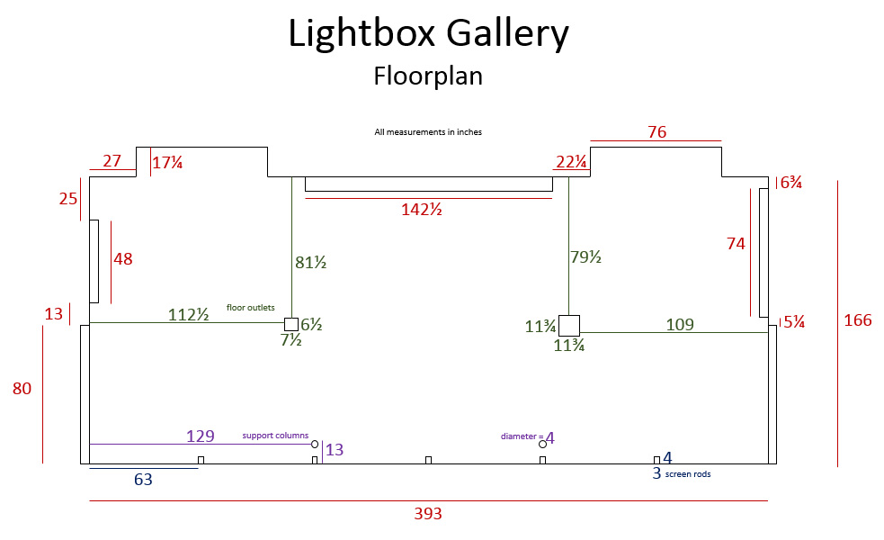

Welcome to the Lightbox
This toolkit provides information on, and specifications about, the equipment used and available in the Lightbox Gallery.
The Lightbox Gallery is an open ended experimental space in the Harvard Art Museums dedicated to projects and artworks that use new media and emerging technologies to explore the museums' collection.
It is located in room number 5000 and is the only public gallery on the the fifth floor of the museums.
Lightbox Gallery from Harvard Art Museums on Vimeo.
About the room and technology
Post from RICOH THETA. - Spherical Image - RICOH THETA
There is a wall of nine screens on the east side of the Lightbox Gallery.
- Overall, it is 142.50 inches wide and 80.25 inches tall. (362cm x 204cm)
- Each individual screen is 47.50 inches wide and 26.75 inches tall. (120.65cm x 68.00cm)
- Combined, the screens have a resolution of 5760 by 3240 pixles—however, when displaying something across all nine screens using standard full-screen features (as in web browsers or video players), the maximum resolution is 1920 by 1080 pixels.
- How the information is displayed across the screens can be changed using the Creston Panel.
- Additionally, behdind the screens are keyboards to control the pcs and usb ports to upload projects.
- Video is processed by two Vista Spyder X20s, and controlled with a Crestron Pro-3.
- There are two fixed projectors, which face the wall of shades on the west side of the Lightbox Gallery.
- Each projector is controlled by a PC running Windows. They also come installed with Kiosk Launcher, Processing 2, Processing 3 and VLC. Other programs can be installed as needed.
- The projection area is 240.0 inches wide and 67.5 inches tall. (610.0cm x 171.5cm)
Floorplan

- On the floorplan this is the space between the middle screen rods.
- It has a combined resolution of 3840 x 1080 pixels.
- It covers the center four shades on the west wall of the gallery.
- The shades are controlled via a VPN
Other Tools
There are additional technologies available for interaction.
- There is a 4th generation iPad located in the kiosk stand nearer the entrance of the Lightbox Gallery furthest from the elevators.
- Additional controllers available for interaction include a variety of remotes, keyboards, joysticks and mice.
- Keyboards with built-in trackpads that connect to each of the pcs can be found behind the screens on the righthand side. Note that they must be turned on before using, and turned off after use.
- Two boxes located in the center of the gallery floor also contain a variety of power, network, and utility lines.